Phong cách Edit Affiliate V3.3 & Công thức quay dựng 4 pha AIDA
Khi làm video bán sản phẩm vật lý như đồ gia dụng, phụ kiện công nghệ hay hàng tiêu dùng, người xem không cần nghe bạn đứng chào hỏi dài dòng. Mắt họ chỉ dừng lại khi thấy cảnh tay thật đang xử lý vết bẩn thật, thấy rõ cấu tạo món đồ và thấy kết quả trước – sau trong vài giây... Tài liệu này đúc kết trọn vẹn cách bấm máy theo 4 pha AIDA kết hợp hệ thống AI Edit Affiliate V3.3 vừa hoàn thiện trên mẫu video dropship1.mp4.
PHẦN 01 • NỀN TẢNG TÂM LÝ THỊ GIÁC 1. Nền tảng 4 pha AIDA và giải phẫu 2 video mẫu từ playlist YouTube
Ở định dạng quay sản phẩm không lộ mặt, người mua không nhìn thấy nét mặt của bạn, nên thứ tự sắp xếp các cảnh quay chính là thứ giữ người xem ở lại. Công thức AIDA (Attention – Interest – Desire – Action) không phải là lý thuyết khô khan trên giấy, mà là đúng 4 câu hỏi diễn ra tuần tự trong đầu người mua chỉ trong vòng 20 đến 50 giây lướt điện thoại:
1.1. Bản chất 4 pha A - I - D - A khi người xem lướt qua video sản phẩm
Để thấy rõ cách các nhãn hàng phụ kiện lớn vận hành đúng 4 pha này như thế nào, mình cùng mổ xẻ 2 video đặc trưng nhất trong Playlist YouTube Video quảng cáo theo công thức AIDA. Bạn có thể bấm trực tiếp vào từng nút mốc thời gian bên cạnh video để xem đúng từng pha:
1.2. Video mẫu #01: Ulanzi JJ03 3-in-1 Magnetic Tripod (48 giây — Mẫu phụ kiện đa năng)
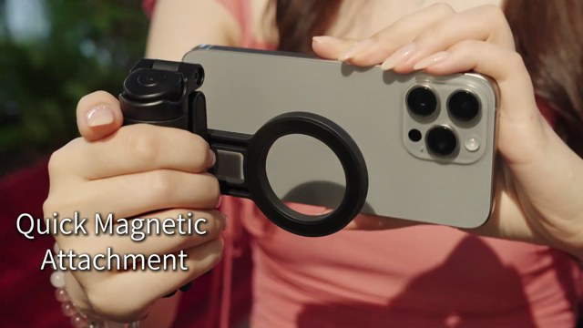
1.3. Video mẫu #02: A30 Tiny Wireless Lavalier Microphone (55 giây — Mẫu bằng chứng trực quan)
Nếu chiếc chân máy ở Video #01 dễ nhìn thấy bằng mắt thường, thì chiếc mic thu âm ở Video #02 lại có đặc tính vô hình (độ ổn định kết nối và thời lượng pin). Hãy xem cách người dựng biến những thông số khô khan thành hình ảnh nhìn phát hiểu ngay theo đúng 4 pha AIDA:
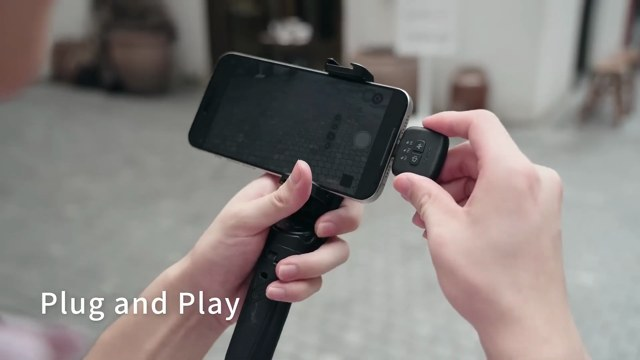
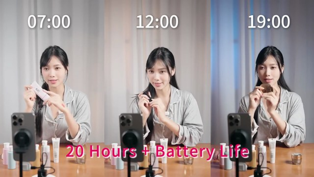
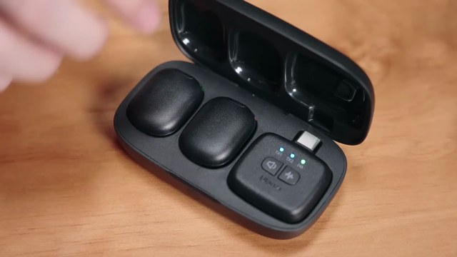
PHẦN 02 • QUY CHUẨN BẤM MÁY TẠI BÀN 2. Quy chuẩn quay sản phẩm Affiliate / Dropship theo 4 pha AIDA
Nhiều bạn khi cầm món đồ lên quay hay mắc một thói quen: cứ giơ sản phẩm ra trước mặt xoay qua xoay lại từ đầu đến cuối video. Quay như vậy người xem lướt qua ngay ở giây thứ 2 vì họ không thấy món đồ đó tháo gỡ được việc gì cho mình. Khi bạn bấm máy đủ 4 pha AIDA, mỗi cảnh quay đều mang một nhiệm vụ rõ ràng để thuyết phục người mua:
2.1. Quay đúng đủ 4 pha AIDA thì mang lại hiệu quả thực tế ra sao?
| Pha trong AIDA | Nếu quay thiếu hoặc quay hời hợt | Khi bấm máy đúng chuẩn AIDA thực tế | Hiệu quả trực tiếp tới quyết định mua |
|---|---|---|---|
| 1. Attention 0.0s – 3.0s |
Mở đầu bằng cảnh hộp giấy đóng kín hoặc cầm sản phẩm nói giới thiệu chậm rãi. | Đưa thẳng 3 cảnh máy đang xoáy bay bọt bẩn trên 3 bề mặt khác nhau ghép cùng lúc (3-Split Grid). | Giữ người xem dừng ngón tay lại ngay trong 1.5 giây đầu, không bị trôi qua vô ích. |
| 2. Interest 3.0s – 11.5s |
Chỉ quay xa xa, không thấy rõ đầu cọ hay chất liệu thật của sản phẩm. | Đặt máy cách 25cm góc nghiêng 45 độ, quay rõ đầu cước cứng cọ kiềng bếp ga và lông cọ luồn sâu vào khe hút mùi. | Khách thấy tận mắt lực máy khỏe thật, xóa sạch nghi ngờ "hàng quảng cáo trên mạng yếu xìu". |
| 3. Desire 11.5s – 20.6s |
Chỉ quay đúng 1 chỗ duy nhất khiến khách nghĩ "mua về dùng được mỗi việc này thì phí tiền". | Quay liên tiếp cảnh cọ bồn rửa inox, chà giày trắng không xước và thao tác rút thay 5 đầu cọ chỉ trong 1 giây. | Khách tính nhẩm thấy 1 máy thay thế được cả đống bàn chải cũ ở nhà, thấy quá hời so với giá tiền. |
| 4. Action 20.6s – 22.7s |
Video tự dưng cắt cụt ngủn khi đang cọ dở, không cho xem kết quả sạch bóng sau khi lau. | Đặt cảnh Trước khi cọ (mảng dầu cháy vàng) ở nửa trên và Sau 3 giây lau sạch sáng bóng ở nửa dưới kèm dòng nhắc freeship. | Cảm giác thỏa mãn thị giác đẩy lên cao nhất đúng lúc hiện dòng chữ "Nhấn giỏ hàng sở hữu ngay". |
2.2. Bảng kiểm 8 góc bấm máy tại nhà cho 1 video sản phẩm 22 giây
Trước khi đưa vào hệ thống AI Edit, bạn chỉ cần cầm điện thoại bấm đúng 7–8 đoạn video ngắn (mỗi đoạn từ 3 đến 4 giây) theo danh sách dưới đây:
0.00s – 3.00s).3.00s – 5.37s).5.37s – 8.00s).8.00s – 11.47s).13.67s – 17.37s).17.37s – 20.63s).20.63s – 22.73s).PHẦN 03 • CHUẨN BỐ CỤC AFFILIATE STYLE V3.3 3. Cơ chế áp dụng AI vào Edit tự động theo AIDA (3.3-mfx-v3-header-1-dong)
Khi đã có các cảnh quay thô, nếu chèn chữ thủ công rất dễ mắc lỗi: chữ che mất sản phẩm, nền đen phủ kín làm tối khung hình, hoặc dùng một kiểu chữ đơn điệu từ đầu đến cuối. Phiên bản Affiliate Style V3.3 (3.3-mfx-v3-header-1-dong) giải quyết triệt để bằng 4 quy tắc tự động hóa dưới đây:
3.1. Thanh Header mảnh 1 dòng tại Y=54px (Chỉ chiếm 1.7% diện tích màn hình)
Thay vì đóng các hộp thông số dày cộp hay bộ đếm số thứ tự ở góc trên gây rối mắt, toàn bộ phần nhận diện phía trên được rút gọn về duy nhất 1 hàng ngang tại tọa độ Y=54px:
- Góc trái (
X=52..70px, Y=54px): Chấm tròn màu nhấn đi kèm tên kênh@AffilateStylecỡ nhỏ22px(fontSVN-AEONIK-MEDIUM, độ mờ75%). Không có dòng chữ phụ, không có số đếm01/08làm phân tâm người xem. - Góc phải cùng hàng (
Y=54px): Vạch đứng màu nhấn đi kèm nhãn thông số kỹ thuật 3–4 từ viết hoa (SVN-AEONIK-BLACK 24px) nhảy tự động theo đúng tính năng đang diễn ra trong khung hình:| XOAY 360 HIGH-TORQUE,| ĐẦU CỌ CƯỚC CỨNG,| LÔNG CỌ ĐÀN HỒI,| CHỐNG NƯỚC IPX7,| 5 ĐẦU CỌ ĐA NĂNG,| ĐẦU CỌ SỢI MỀM,| KHỚP NỐI 1 NHỊP,| TRƯỚC & SAU 3 GIÂY.
3.2. Giữ trọn 84% diện tích sạch giữa màn hình (Y=105..1210px) & Xử lý làm sạch cảnh gốc
1080×1920px.Y=105px đến Y=1210px có độ phủ đen bằng 0%. Bọt xà phòng trắng, mặt kính bếp và inox giữ nguyên độ sáng trong trẻo.Y=1210px (tức 63% chiều cao khung hình) đi xuống đáy để làm nền đỡ cho biểu tượng không viền (Y=1315px) và 2 dòng chữ (Y=1385px & Y=1476px).cv2.inpaint kết hợp cắt khung thông minh để đầu bàn chải luôn nằm đúng tâm nhìn.3.3. Phối 3 kiểu chữ (TYPO-04 / TYPO-05 / TYPO-06) theo đúng nhịp cảm xúc AIDA
Hệ thống tuân thủ nghiêm ngặt quy tắc không sử dụng bộ font FDAeonikExtended, mà phối hợp 5 họ chữ sạch bản quyền (SVN-Aeonik, FDIntegralCF, SVN-Flatline, FDActa, SVN-FreightDisplay) thành 3 tổ hợp tự động đổi theo từng pha:
3.4. Kỹ thuật Split & Ripple (+2.20s) cho Màn đen #B1 và Khung chia đôi Trước/Sau #V2
#B1 ở giữa video (11.47s – 13.67s), hệ thống tuyệt đối không đè lên làm mất 2.2 giây cảnh sản phẩm. Video gốc được tách đôi tại mốc 9.37s, chèn 2.20s màn đen vào giữa, rồi đẩy toàn bộ các cảnh phía sau lùi xuống +2.20s (tổng thời lượng tăng từ 20.53s lên 22.73s).
PHẦN 04 • ĐỐI CHIẾU THỰC TẾ TRƯỚC & SAU 4. Trình phát so sánh trực tiếp Video Trước & Sau kèm giải phẫu 8 nhịp
Dưới đây là trình phát đối chiếu trực tiếp giữa Video gốc trước khi dựng (dropship1.mp4 — 20.53 giây) và Video thành phẩm sau khi qua AI Edit Affiliate V3.3 (dropship1_affilate_v3_final.mp4 — 22.73 giây). Bạn có thể bấm nút phát đồng bộ hoặc nhảy tới từng nhịp để quan sát sự khác biệt:
4.1. Trình phát đối chiếu trực tiếp: Trước (Raw) & Sau (Affiliate Style V3.3)
Y=54px, 84% khung hình sạch, phối 3 kiểu chữ TYPO-04/05/06, chèn nhịp nghỉ #B1 (+2.20s) và chốt đơn bằng Before/After.
4.2. Giải phẫu chi tiết 8 nhịp (Beats 01 – 08) theo trục 4 pha AIDA
Mỗi thẻ dưới đây đặt cạnh nhau khung hình gốc (bên trái) và khung hình đã đóng gói chuẩn Affiliate Style V3.3 (bên phải), kèm đầy đủ thông số tọa độ, kiểu chữ và hiệu ứng âm thanh:
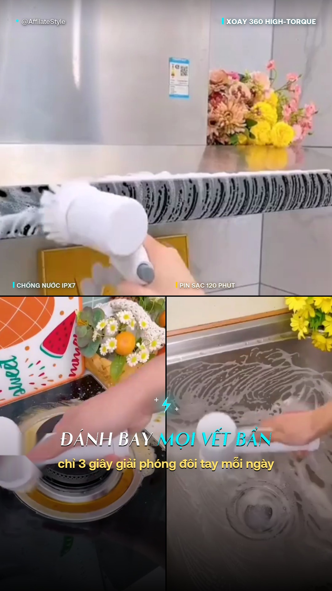
SAU (3-SPLIT HOOK)1080×960px (từ giây 6.80s) + 2 ô dưới 538×956px (từ 1.55s & 8.10s).Y=54px: | XOAY 360 HIGH-TORQUE. Trên đường chia Y=912px: | CHỐNG NƯỚC IPX7 và | PIN SẠC 120 PHÚT.ĐÁNH BAY MỌI VẾT BẨN (nhấn xanh #00F2FE) • Dòng 2 chỉ 3 giây nhàn tênh đôi tay mỗi ngày.shutter_flash_click.wav + sub_bass_hit_clean.wav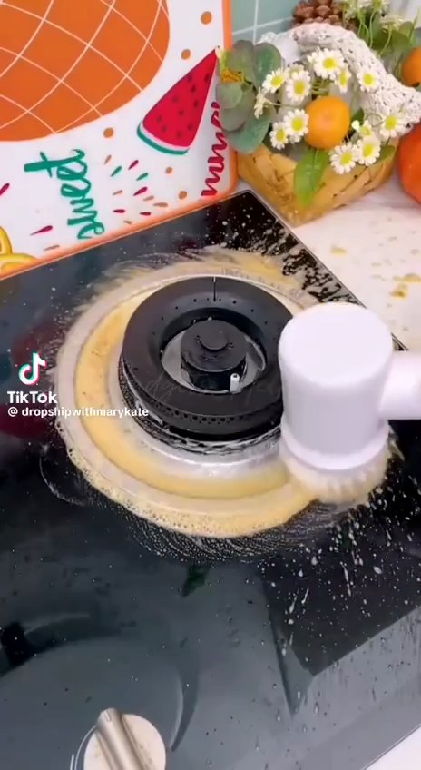
TRƯỚC (DÍNH LOGO TRÁI)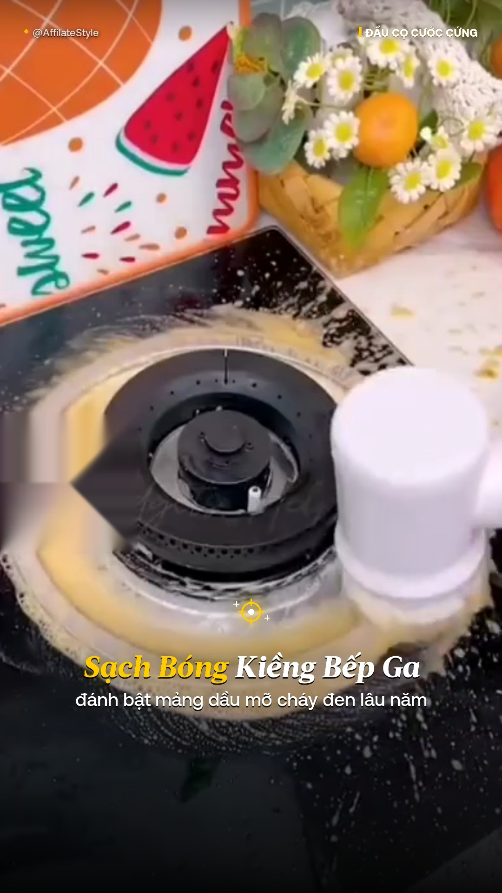
SAU (SẠCH 84% GIỮA)cv2.inpaint, phóng nhẹ 1.04x tập trung vào vòng kiềng bếp ga đang sủi bọt vàng.• @AffilateStyle • Phải: | ĐẦU CỌ CƯỚC CỨNG (nhấn vàng #FFCC00).Sạch Bóng Kiềng Bếp Ga (FDActa-ExtraBoldItalic 64px) • Dòng 2 đánh bật mảng dầu mỡ cháy đen lâu năm.whoosh_clean_soft.wav + pop_soft_bubble.wav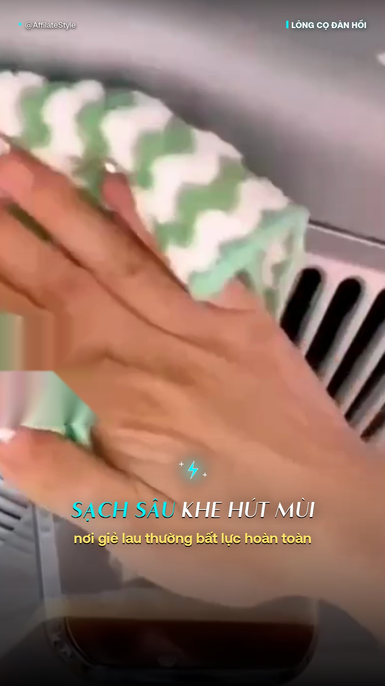
SAU (TYPO-05 SPEED)• @AffilateStyle • Phải: | LÔNG CỌ ĐÀN HỒI (nhấn xanh #00F2FE).SẠCH SÂU KHE HÚT MÙI • Dòng 2 nơi giẻ lau thường bất lực hoàn toàn.whoosh_fast_air.wav + click_mechanical_warm.wav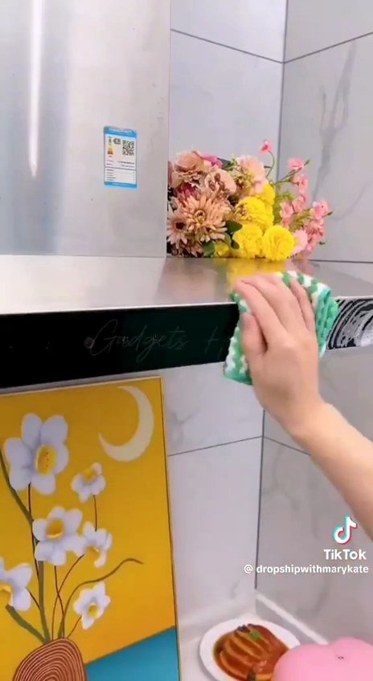
TRƯỚC (CÓ CHỮ ĐÁY)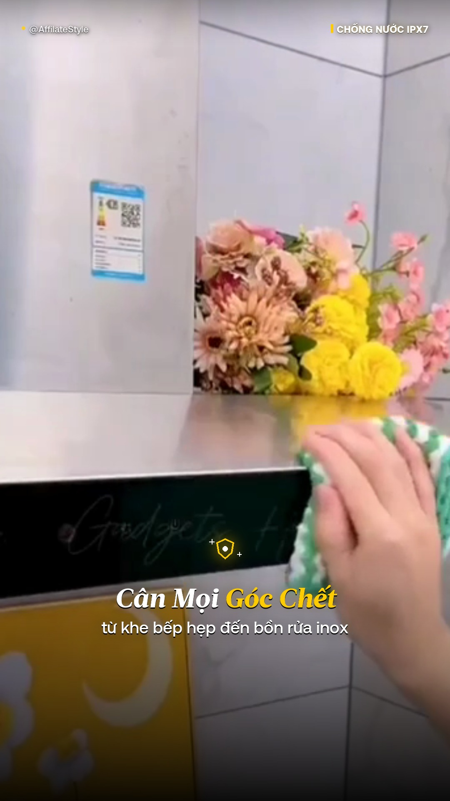
SAU (CROP SẠCH CHỮ CŨ)y2 = 0.76*h), giữ trọn mặt bàn inox sáng loáng.• @AffilateStyle • Phải: | CHỐNG NƯỚC IPX7 (nhấn vàng #FFCC00).Cân Mọi Góc Chết • Dòng 2 từ khe bếp hẹp đến bồn rửa inox.whoosh_clean_soft.wav + pop_soft_bubble.wav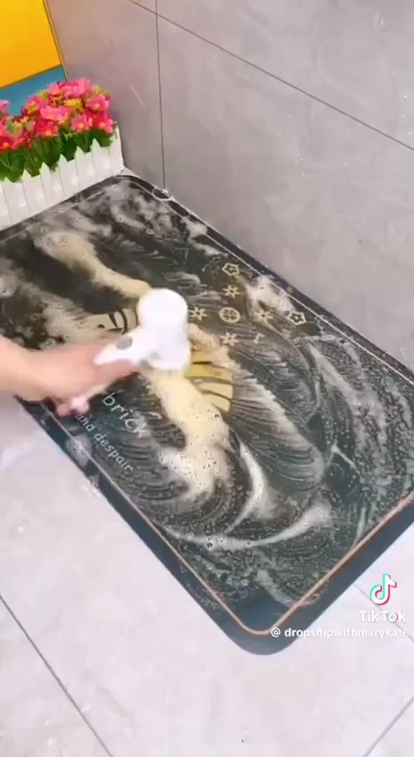
ĐIỂM TÁCH GỐC (9.37s)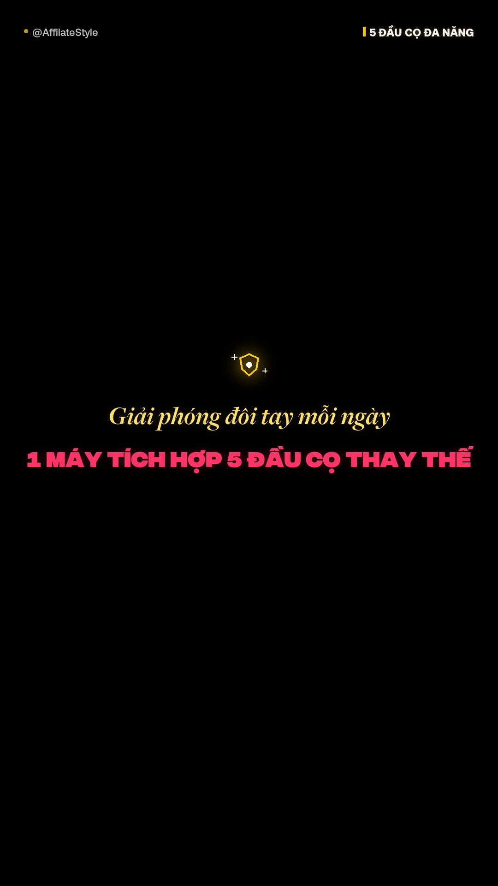
MÀN ĐEN #B1 (+2.20s)9.37s của video gốc, chèn 2.20s màn đen #B1 làm nhịp nghỉ thị giác rồi nối lại từ 9.37s mà không mất 1 khung hình nào.• @AffilateStyle • Phải: | 5 ĐẦU CỌ ĐA NĂNG (nhấn vàng #FFCC00).Nhàn tênh đôi tay mỗi ngày (#FFE066) • Dòng 2 1 MÁY TÍCH HỢP 5 ĐẦU CỌ THAY THẾ (#FF3366).riser_short_silk.wav + chime_warm_luxury.wav• @AffilateStyle • Phải: | ĐẦU CỌ SỢI MỀM (nhấn xanh #00F2FE).CỨU TINH GIÀY TRẮNG • Dòng 2 lông bàn chải mềm không làm xước bề mặt.whoosh_fast_air.wav + click_mechanical_warm.wav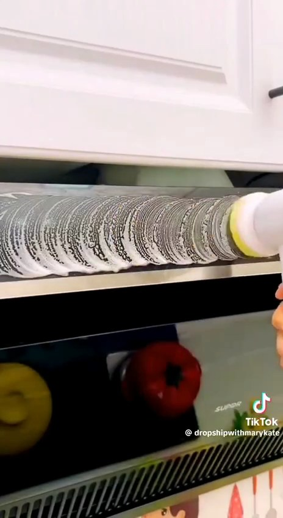
TRƯỚC (15.17s – 18.43s)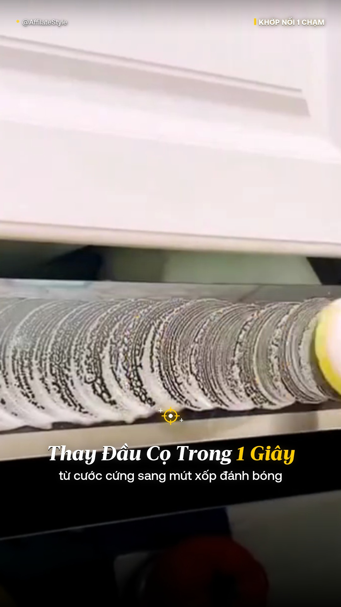
SAU (17.37s – 20.63s)• @AffilateStyle • Phải: | KHỚP NỐI 1 NHỊP (nhấn vàng #FFCC00).Thay Đầu Cọ Trong 1 Giây • Dòng 2 từ cước cứng sang mút xốp đánh bóng.whoosh_clean_soft.wav + pop_soft_bubble.wav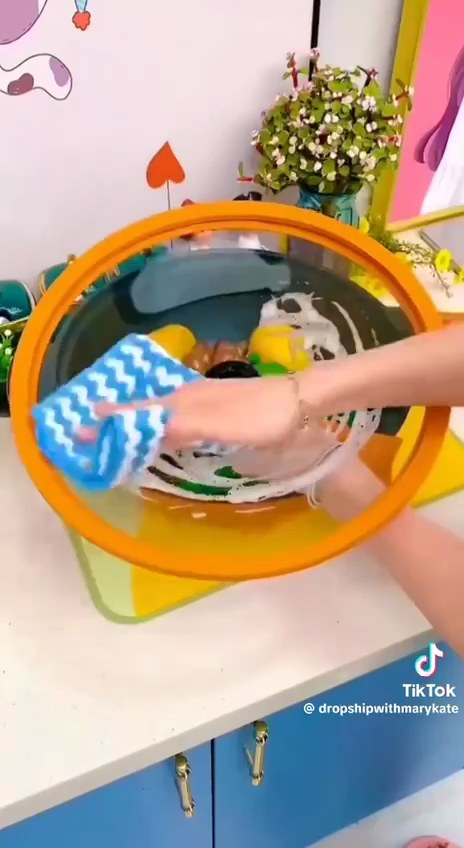
TRƯỚC (CẢNH ĐƠN LẺ)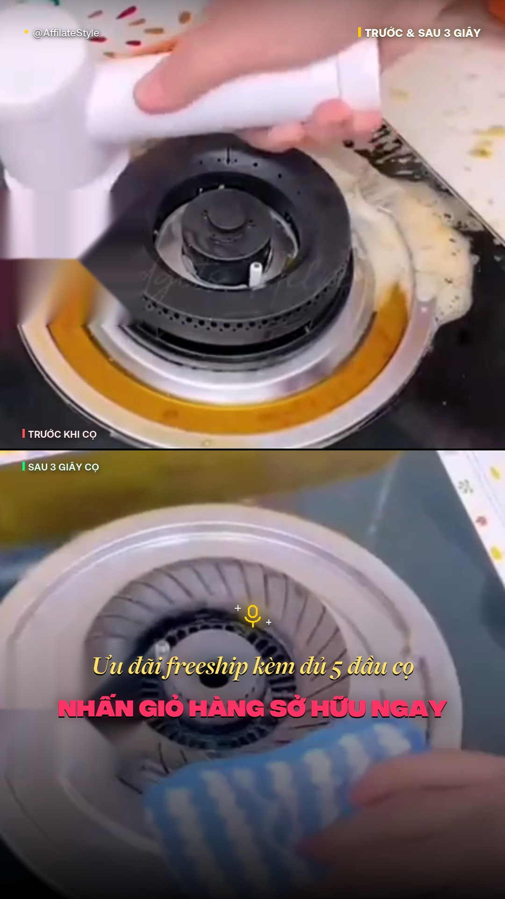
SAU (BEFORE / AFTER)Y=0..958px) ghim cảnh vết bẩn vàng cháy kèm nhãn | TRƯỚC KHI CỌ (#FF5555) • Nửa dưới (Y=962..1920px) phát cảnh lau sạch sáng bóng kèm nhãn | SAU 3 GIÂY CỌ (#00FF88).• @AffilateStyle • Phải: | TRƯỚC & SAU 3 GIÂY (nhấn vàng #FFCC00).Ưu đãi freeship kèm đủ 5 đầu cọ (#FFE066) • Dòng 2 NHẤN GIỎ HÀNG SỞ HỮU NGAY (#FF3366).shutter_flash_click.wav + sub_bass_hit_clean.wav